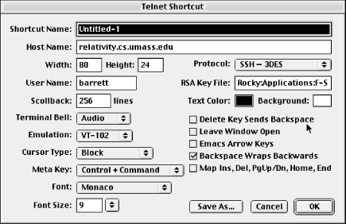
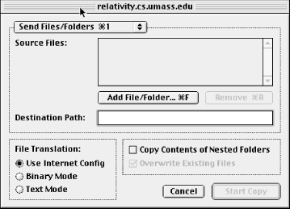

|  |
17.2. Basic Client Use
NiftyTelnet SSH began life as NiftyTelnet, a Macintosh Telnet application, with SSH support added later by another programmer. Most of the configurable parameters relate to Telnet, so we don't cover them, just the SSH-specific ones.
Figure 17-2. NiftyTelnet SSH Settings window
17.2.1. Authentication
For SSH, you specify only your cipher (labeled "Protocol") and the path to your private key file (labeled "RSA Key File"), as shown in Figure 17-2. The default authentication method is public key, but if this fails or you have no key file, it falls back to password authentication. The only tricky part is the path, which must be typed, rather than browsed by the usual Macintosh file selector. [Section 17.3, "Troubleshooting"]17.2.2. Scp
The Scp button on the New Connection dialog box permits secure copying of files and folders via SSH between your Mac and a remote computer. This feature operates much like the scp1 client of SSH1 but with a graphical interface (see Figure 17-3).
Figure 17-3. NiftyTelnet Scp window
Local files and folders may be selected by browsing, but remote files and folders must have their names entered manually. If you're used to Mac FTP clients such as Fetch, this interface might seem a bit spartan. Nonetheless, it works, and if you ask NiftyTelnet SSH to remember your password, you don't have to retype it for each file transfer.17.2.3. Host Keys
Every SSH server has a unique host key that represents the server's identity, so clients such as NiftyTelnet SSH can verify that they are speaking with the actual server and not an impostor. [Section 2.3.1, "Known Hosts"] NiftyTelnet keeps track of all server host keys it encounters. The keys are stored in a file called NiftyTelnet SSH Known Hosts in your Macintosh's Preferences folder within the System folder. The file has the same format as SSH1 known hosts files. [Section 3.5.2.1, "Host keys"] |  | |
| 17. NiftyTelnet SSH |  | 17.3. Troubleshooting |